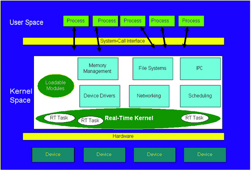

| ELJonline: Real Time and Linux, Part 3: Sub-Kernels and Benchmarks |
Kevin Dankwardt
In the first two articles of this series (see "Real Time and Linux, Part 1" and "Real Time and Linux, Part 2: the Preemptible Kernel"),
we examined the fundamental concepts of real time and efforts to make
the Linux kernel more responsive. In this article we examine two
approaches to real time that involve the introduction of a separate,
small, real-time kernel between the hardware and Linux. We also return
to benchmarking and compare a desktop/server Linux kernel to modified
kernels.
We note and discuss no further that LynuxWorks and
OnCore Systems provide proprietary kernels that provide some Linux
compatibility. LynuxWorks provides a real-time kernel that implements a
Linux compatible API. OnCore Systems provides a real-time microkernel
that provides Linux functionality in a variety of ways. These allow one
to run a Linux kernel, with real-time performance of its processes, on
top of their microkernel.
In this article we concern ourselves
primarily with single-CPU real time. When more than one CPU is used,
new solutions to real time are possible. For example, one may avoid
system calls on a CPU on which a real-time process is waiting. This
avoids the kernel-preemption problem altogether. One may be able to
direct interrupts to a particular CPU and away from another particular
CPU, thus avoiding interrupt latency issues. All of the Linux real-time
solutions, incidentally, are usable on multi-CPU systems. In addition,
RTAI for example, has additional functionality for multiple CPUs. We
are focused, however, on the needs of embedded Linux developers, and
most embedded Linux devices have a single general-purpose CPU.
What Is a Real-Time Sub-Kernel?
A
typical real-time system has a few tasks that must be executed in a
deterministic, real-time manner. In addition, it is frequently the case
that response to hardware interrupts must be deterministic. A clever
idea is to create a small operating system kernel that provides these
mechanisms and provides for running a Linux kernel as well, to supply
the complete complement of Linux functionality.
Thus, these
real-time sub-kernels deliver an API for tasking, interrupt handling
and communication with Linux processes. Linux is suspended while the
sub-kernel's tasks run or while the sub-kernel is dealing with an
interrupt. As a consequence, for example, Linux is not allowed to
disable interrupts. Also, these sub-kernels are not complete operating
systems. They do not have a full complement of device drivers. They
don't provide extensive libraries. They are an addition to Linux, not a
standalone operating system.
There is a natural tendency,
however, for these sub-kernels to grow in complexity, from software
release to software release, as more and more functionality is
incorporated. A major aspect of their virtue, though, is that one may
still take advantage of all the benefits of Linux in one's application.
It is just that the real-time portion of the application is handled
separately by the sub-kernel.
Some view this situation as Linux
being treated as the lowest priority, or idle, task of the sub-kernel
OS. Figure 1 depicts the relationship of the sub-kernel and Linux.

Figure 1. Relationship of the Sub-Kernel and Linux
The
sub-kernels are created with Linux by doing three things: 1) patching a
Linux kernel to provide a few hooks for things like added
functionality, 2) modifying the interrupt handling and 3) creating
loadable modules to provide the bulk of the API and functionality.
Sub-kernels
provide an API for use by the real-time tasks. The APIs they provide
resemble POSIX threads, other POSIX functions and additional unique
functions. Using the sub-kernels means that the real-time tasks are
using APIs that may be familiar to Linux programmers, but they are
separate implementations and sometimes differ.
Interrupt
handling is modified by patching the kernel source tree. The patches
change the functions, for example, that are ordinarily used to disable
interrupts. Thus, when the kernel and drivers in the Linux sub-tree are
recompiled, they will not actually be able to disable interrupts. It is
important to note this change because it means, for example, that a
driver compiled separately from these modified headers may actually
disable interrupts and thwart the real-time technique. Additionally,
nonstandard code that, say, simply inlines an interrupt-disabling
assembly language instruction will likewise thwart it. Fortunately, in
practice, these are not likely situations and certainly can be avoided.
They are examples to reinforce the idea that no real-time solution is
completely free from caveats.
RTLinux and RTAI
The
two most commonly used sub-kernels are RTLinux and RTAI. Both RTLinux
and RTAI are designed for hard real time. They are much more (and a
little less) than just a preemptible kernel. In practical terms, a
real-time operating system provides convenience to developers. RTLinux
and RTAI provide a wealth of additional, real-time, related functions.
RTAI, for example, provides rate-monotonic scheduling and
early-deadline-first scheduling, in addition to conventional priority
scheduling.
The sub-kernels provide both POSIX and proprietary
functions, as well as functions to create tasks, disable/enable
interrupts and provide synchronization and communication. When using
RTLinux or RTAI, a developer uses a new API in addition to their POSIX
functions.
Both RTLinux and RTAI furnish some support for
working with user-space processes. This is important because a
real-time application for Linux naturally will want to make use of the
functionality of Linux. RTLinux provides support for invoking a signal
handler in a user-space process, in addition to FIFOs and shared memory
that can be read and written in both kernel and user space. RTAI
provides FIFOs, shared memory and a complete, hard real-time mechanism,
called LXRT, that can be used in user space.
These mechanisms,
though, don't make the Linux kernel real time. A user-space process
still must avoid system calls because they may block in the kernel.
Also, it seems neither RTLinux nor RTAI have been enhanced to work with
a preemptible kernel. Since the two approaches are both beneficial, and
mostly orthogonal, perhaps they will be combined in the near future.
This may be likely since the Love patches are now part of the standard
2.5 kernel tree and perhaps will be a part of the stable, 2.6 kernel
whenever it is released.
Some Thoughts on the Choices
For
a developer requiring real-time enhancements, choosing among RTLinux,
RTAI, the Love preemptible kernel and the TimeSys preemptible kernel,
there are a myriad of issues. Let's highlight a few that many
developers value. - Which are maintained in an open-source manner where independent outsiders have contributed? RTAI and Love.
- Which have a software patent for their underlying technique? RTLinux.
- Which are part of the 2.5 Linux kernel tree? Love.
- Which have additional real-time capabilities besides preemptibility? TimeSys, RTAI and RTLinux.
-
Which are positioned such that one can reasonably assume that the
solution will continue to be freely available for free download? RTAI
and Love (in my humble opinion).
- Which give control over interrupts and are likely to provide near-machine-level resolution responsiveness? RTLinux and RTAI.
Kernel Availability for Different Processors
None
of these real-time approaches are available for every CPU on which
Linux runs; extra effort is required to adapt the solution to a new
processor. But, as the four solutions we examine here have quite active
development, it is safe to assume that support for additional CPUs is
at least contemplated.
As a snapshot, the Love preemptible
kernel is currently only available for x86, but with MontaVista's
support it is likely to be ported to most, if not all, of the CPUs that
MontaVista supports. That includes PowerPC, ARM, MIPS, SuperH, etc. The
TimeSys kernel is currently available for PowerPC, ARM, SuperH and
Pentium. RTLinux is available for x86 and PowerPC. RTAI is available
for x86 and PowerPC.
Benchmarks
You may download
the benchmark programs from the Web (see the Resources Sidebar under K
Computing Benchmarks). All of our benchmarks were run on a 465MHz
Celeron. Other x86 CPUs, however, have produced similar results. We
have not benchmarked on other kinds of CPUs.
We benchmarked the
Red Hat 7.2 kernel, which is based on Linux kernel 2.4.7; the TimeSys
Linux 3.0 kernel, which is based on Linux 2.4.7; and a kernel patched
with Robert Love and MontaVista's preemption patch for Linux kernel
2.4.18. We will refer to these kernels as Red Hat, TimeSys and Love,
respectively. We separately benchmarked the RTAI and RTLinux kernels.
The
benchmark consisted of timing the precision of a call to nanosleep().
Sleeping for a precise amount of time closely relates to the kernel's
ability to serve user-space, real-time processes reliably. The Linux
nanosleep() function allows one to request sleeps in nanosecond units.
Our benchmark requests a 50 millisecond sleep. Interestingly, a request
to nanosleep() to sleep N milliseconds reliably sleeps 10 + N
milliseconds. Thus, we measure jitter with respect to how close the
sleep was to 60 milliseconds. Also, one should note that nanosleep() is
a busy wait in the kernel when the request to sleep is for an amount of
two milliseconds or less. Therefore, a busy wait would not simulate
interrupt response time as well as a true sleep.
The benchmark
program takes 1,000 samples. The last 998 are used in the graph. The
first two are discarded to avoid cache slowdowns as a result of a cold
cache. The benchmark program was locked into memory via mlockall() and
given the highest FIFO priority via sched_set_scheduler() and
sched_get_priority_max().
The heart of our benchmark is:
t1 = get_cycles();
nanosleep(fifty_ms, NULL);
t2 = get_cycles();
jitter[i] = t2 - t1;
The
get_cycles() function is a machine-independent way to read the CPU's
cycle counter. On x86 machines it reads the timestamp counter (TSC).
The TSC increments at the rate of the CPU. Thus, on a 500MHz CPU, the
TSC increments 500,000,000 times per second. The frequency of the CPU
is determined by examining the CPU speed value listed in /proc/cpuinfo.
The read of the TSC takes on the order of about ten instruction times
and is extremely precise in comparison to the interval we are timing.
The
difference, in milliseconds, from our expected sleep time of 50 + 10
milliseconds for a given value of jitter, is calculated as
diff = (jitter/KHz) - 10 - 50;
The
five benchmarks used the stress tests of Benno Senoner, which are part
of his latency test benchmark. These tests stress the system by copying
a disk file, reading a disk file, writing a disk file, reading the
/proc filesystem and performing the X11perf test. The graphs of the
three kernels for these loads are shown in Figures 2-6.
Figure 2. Copying a Disk File
Figure 3. Reading a Disk File
Figure 4. Writing a Disk File
Figure 5. Reading the /proc Filesystem
Figure 6. Performing the X11perf Test
Since
the Red Hat kernel is clearly much less responsive than the Love or
TimeSys kernels, we separately graph just the Love and TimeSys kernel
results. These are depicted in Figures 7-11.
Figure 7. Love and TimeSys Kernels: Copying a Disk File
Figure 8. Love and TimeSys Kernels: Reading a Disk File
Figure 9. Love and TimeSys Kernels: Writing a Disk File
Figure 10. Love and TimeSys Kernels: Reading the /proc Filesystem
Figure 11. Love and TimeSys Kernels: Performing the X11perf Test
It
is apparent from the graphs that the preemptible kernels provide
significant improvement in responsiveness. Because they represent much
improved performance, without a change in the API required to be used
by an application, they are clearly attractive choices for embedded
Linux developers.
RTLinux and RTAI Benchmarks
One
justifiably expects that RTAI and RTLinux will provide rock-solid
performance even under great loads. They meet these expectations,
evidenced through our benchmarks. One must remember, though, that there
are still a few caveats. Some issues to keep in mind that can thwart
real-time performance: perform no blocking operations such as memory
allocation; don't use any drivers that haven't been patched to avoid
truly disabling interrupts, and avoid costly priority inversions.
To
benchmark RTAI and RTLinux we created a periodic task and measured its
timing performance against the requested periodic rate. The worst-case
performance for both RTLinux and RTAI is on the order of 30
microseconds or less. Our benchmark programs are available for free
download (see the Resources Sidebar under K Computing Benchmarks).
Resources
Talk back! Do you have comments or questions on this story? talkback here
About the author: Kevin Dankwardt
is founder and CEO of K Computing, a training and consulting firm in
Silicon Valley. In particular, his organization develops and delivers
embedded and real-time Linux training worldwide.
Copyright
© 2002 Specialized Systems Consultants, Inc. All rights reserved.
Embedded Linux Journal Online is a cooperative project of Embedded
Linux Journal and LinuxDevices.com.
Be sure to read the full three-part series on Real-time Linux by Kevin Dankwardt . . .
(Click here for further information)
|
|
|

7 Advantages of D2D Backup
For decades, tape has been the backup medium of choice. But, now,
disk-to-disk (D2D) backup is gaining in favor. Learn why you should
make the move in this whitepaper.
4 Legal Reasons to Control Internet Access
The Internet is obviously a valuable resource for many organizations.
However, many are exposed to legal liability concerns because they fail
to control Internet access. Learn if you're safe in this white paper.
Rapidly Resolve J2EE Application Problems
Whether you are in the process of building J2EE applications or have
J2EE applications already running in production, you must ensure that
they deliver the expected ROI. Learn how in this white paper.
Load Testing 2.0 for Web 2.0
There are many unknowns in stress testing Web 2.0 applications. Find
out how to test the performance of Web 2.0 in this white paper.
Build Better Games Online
For
the game infrastructure providers, life is complex. Making money from
games has become more complicated. Why? Find out in this white paper.
Building a Virtual Infrastructure from Servers to Storage
This
white paper discusses the virtual storage solutions that reduce cost,
increase storage utilization, and address the challenges of backing up
and restoring Server environments.
Gaining Faster Wireless Connections with WiMAX
Welcome
to what is quickly becoming the hyperconnected world where anything
that would benefit from being connected to the network will be
connected. Learn more in this white paper.
Is Your Desktop a Security Threat?
The new wave of sophisticated crimeware not only targets specific
companies, but also targets desktops and laptops as backdoor entryways
into those business’ operations and resources. Learn how to stay safe
in this white paper.
Increasing SAN Reliability by 100 Percent
Storage area networks (SAN) are a strong part of storage plans. Learn
how to increase your reliability and uptime by 100 percent in this case
study. |
|
|
|
Got a HOT tip?
please tell us!
Click here for a profile of each sponsor:
ADVERTISEMENT
(Advertise here)
|
Check out the latest Linux powered...
|
|
HOWTOs: from DevShed & IBM DeveloperWorks:
|
|
|
Also visit our sister site:

Sign up for LinuxDevices.com's...
 news feed
news feed
|
|